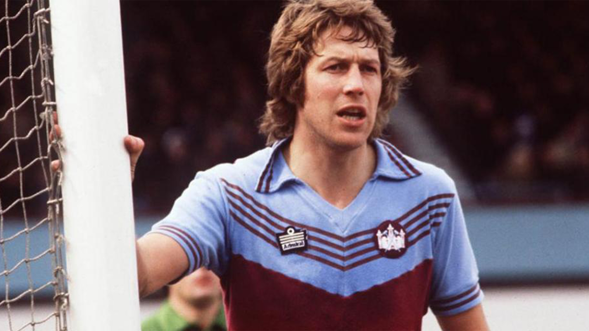

West Ham Utd Home Kit
1980

In the vibrant summer of 1980, as a wide-eyed child, I embarked on a journey to London that would leave an indelible mark on my childhood memories. Among the myriad of experiences in the bustling city, one particular escapade stood out - a pilgrimage to a football haven. The allure of West Ham United, with its historic roots and fervent fan base, beckoned me to Upton Park. In the heart of East London, I acquired the cherished West Ham home kit, a ritual that marked the inception of my enduring collection. The vivid claret and blue stripes, emblematic of the Hammers, adorned my youthful frame as I proudly strolled the hallowed grounds where football legends had once graced the pitch. The nostalgia embedded in that jersey transcended the tangible fabric; it encapsulated the spirit of a bygone era and the fervor of a devoted supporter. The streets of London, with their iconic landmarks and eclectic charm, served as the backdrop to this transformative journey. As I look back on that summer in 1980, the West Ham kit remains a cherished artifact, a tangible link to the passion and excitement of my earliest footballing adventures.